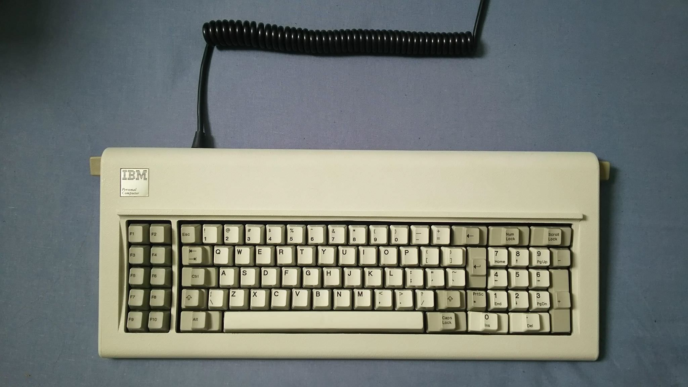

Oppsett for bruk med GNU/Linux
nvim-R | runit | model F | pacman | osprober | spotify | DVD | keys | e-post

Soarer's Converter Tools
Last ned og installer sctools:
$ git clone https://github.com/thentenaar/sctools $ cd sctools $ ./autogen.sh && make && make installOppsett:
profil.scKompiler og last inn profil:
# Tilpasset oppsett for IBM Model F remapblock CAPS_LOCK LALT LCTRL CAPS_LOCK ESC BACK_QUOTE BACK_QUOTE BACKSLASH BACKSLASH LCTRL SCROLL_LOCK ESC PAD_ASTERIX PRINTSCREEN endblock
$ scas profil.sc profil.bin # sctool write profil.bin